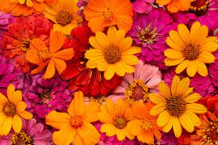

Sobre as Flores
Existem flores de todas as cores, algumas têm odores suaves, outras mais fortes, intensos. Todas carregam uma beleza sem igual, ímpar, imperial. Elas fazem parte da natureza, são um organismo vivo, capaz de se reproduzir e até de evoluir de geração em geração.
Não é possível indicar um número exato de flores no mundo, porque o ultrapassaria os quatro algarismos com toda certeza.
Mas uma flor é mais do que toda esta parte científica, ela tem um poder crucial no ser humano.
Seja para embelezar uma casa, outro lugar especial ou para dar cor a um evento. Seja até para oferecer à pessoa amada ou para você se inspirar enquanto as observa na natureza, a verdade é que as flores não param de surpreender.
As frases que separamos, demonstram que além de lindas, as flores têm muita, muita personalidade!
